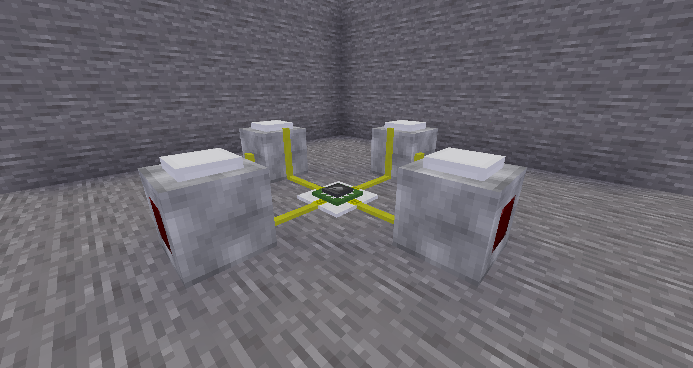
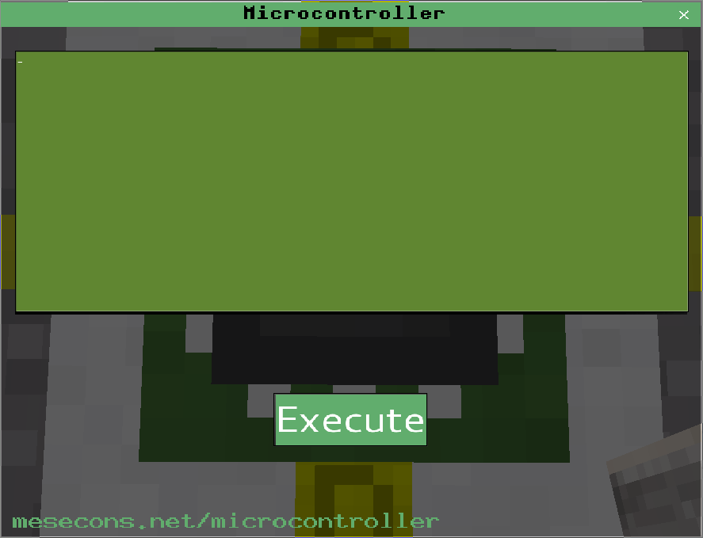

This part contains warnings and common mistakes.
This passage summarizes things you have learned in the chapter or makes things clear.
This is a task for you to check your knowledge.
Learning Lua
You don't have to learn Lua in order to use the Luacontroller, but it's highly recommended.A good Tutorial can be found here, another option is learning by looking at source codes of mods and creating your own ones.
First Steps
Craft the Luacontroller: 
Build this circuit:

Right-click the Luacontroller:

The green box is called the code area, this is where you code everything.
The Execute button below checks the code for errors and executes it. In case there are errors, they will appear in the space between the code area and the button.
Use the white X on the top right to close the window.
Chapter I: Your First Program: Output
port.a = true
Enter this and close the window. If you did well, the A-Port should now light up.You can also set multiple ports at once:
port.a = true
port.b = true
port.c = true
port.b = true
port.c = true
The same thin is also possible in one line only:
port = {a=true, b=true, c=true}
All ports are reset when Programming the Controller. However, you can also turn them off manually:
port = {a=false, b=true, c=false, d=true}
Mind that ports are set after the whole code was executed.
port.a = true
port.a = false
This program won't even activate Port A for a millisecond.port.a = false
Now you know how to set ports of a luacontroller.
A table value for the luacontroller like ports is is called "register". In the luacontroller ports are set from A to D, if it gets interrupted meanwhile, it stops setting ports.
A table value for the luacontroller like ports is is called "register". In the luacontroller ports are set from A to D, if it gets interrupted meanwhile, it stops setting ports.
print()
Is a great function. It can mostly output anything you want through the console (the black window that likely started with minetest or the terminal you launched minetest from)
print("Hello World!")
print("What is the answer to life the universe and everything?")
print(42)
print({answer=42, question="unknown"})
print(port.c)
print(port)
As you can see, the print() function is a very flexible and useful Utility, especially for debugging of your programs.print("What is the answer to life the universe and everything?")
print(42)
print({answer=42, question="unknown"})
print(port.c)
print(port)
Mind that ports are set after the whole code was executed.
print() cannot output multiple arguments:
print("ab", "cd")
Use this instead:
print("ab".."cd")
Write a program that first activates ports B and D and then outputs the whole resulting register.
Chapter II: Input
The input register is called "pin".
print(pin)
This simple code will give you the state of all the inputs at any time.
Basically pin is the merger of incoming power and internal ports that are active.
The whole code is only executed on an event, see Chapter V.
You can easily establish a relation between input and output:
port.b = pin.a
Port B now always adapts the state of port A.
port.a = true
port.b = pin.a
The first time this code is executed, port B will stay inactive: Remember, ports are set after the whole code was executed.However, on a second event, this code will activate port B.
Now you know how to retrieve the state of ports. In the next chapter you'll learn to use them.
Write a program that emulates a simple diode crossing:
Port A adapts the state of port C, port B adapts the state of port D.
Port A adapts the state of port C, port B adapts the state of port D.
Chapter III: Logic
You can replace all gates with the Luacontroller. Lua provides you three logic operators that you can use:not, and, or Additionally, you can use equals(==) unequals(~=) and paranthesis (brackets).
-- AND
port.a = pin.b and pin.c
-- OR
port.a = pin.b or pin.c
-- NOT
port.a = not pin.b
-- NAND
port.a = not (pin.b and pin.c)
-- NOR
port.a = not (pin.b or pin.c)
-- XOR
port.a = pin.b ~= pin.c
-- XNOR / NXOR
port.a = pin.b == pin.c
port.a = pin.b and pin.c
-- OR
port.a = pin.b or pin.c
-- NOT
port.a = not pin.b
-- NAND
port.a = not (pin.b and pin.c)
-- NOR
port.a = not (pin.b or pin.c)
-- XOR
port.a = pin.b ~= pin.c
-- XNOR / NXOR
port.a = pin.b == pin.c
You can also make some more difficult constructions, in this example pin A and B must both be true and pin B mustn't be the same state like pin D, then an output is triggered:
if (pin.a and pin.b and (pin.b ~= pin.d)) then
print("Lua rocks")
end
print("Lua rocks")
end
- Write a program that activates port A if all the other pins are the same state.
- Write a program that activates port C if pin A and B are both true and pin D is false.
Chapter IV: Interrupts
interrupt(1)
print("execute")
This simple code snippet is executed over and over, all 1 second. Interrupts are basically timers, they make the code get executed again after a specific time, here it is 1 second.You can also pass a single argument to the next call, use
interrupt(1, "a parameter")
You can also use numbers or even tables as iid (like pin).
An interrupt is identified by its second argument (= iid = interrupt ID). When registering an interrupt, previous ones with the same iid will be removed. When reprogramming the luacontroller, existing interrupts will also be removed.
Interrupts resume even after restarting the game.
You can access the parameter using
Interrupts resume even after restarting the game.
interrupt(0.5, "a parameter")
print(event.iid)
See chapter V for details.
print(event.iid)
When using too small values for the time, the luacontroller may overheat and drop itself, see chapter VII.
Code a timer that toggles port A every two seconds.
Chapter V: Events
Always if the code is executed, there is some reason for it.
This reason is called event. You can access some of its properties in the event register.
print(event)
event.type defines the kind of event that occured. There may also be some additional information.
The following types of events exist:
| program | Thrown when the controller gets programmed. |
| on | Thrown when any port is activated. Additional information available in event.pin: The name of the port (A, B, C or D), and the x/y/z offset of the pin. |
| off | Thrown when any port is deactivated. Additional information available in event.pin: The name of the port (A, B, C or D), and the x/y/z offset of the pin. |
| interrupt | Thrown when an interrupt timer elapses. Additional information available in event.iid: The iid specified in interrupt(time, iid) |
| digiline | Thrown when information from a digiline was received. Additional information available in event.channel: The channel of the message; and event.msg: The content of the message. See chapter VIII for details |
This now enables us to code a simple T-FlipFlop:
if (event.type == "on" and event.pin.name == "B") then
port.a = not port.a
end
This toggles port A on rising edge of pin B.
port.a = not port.a
end
Write a program that toggles all ports apart from A when there is a falling edge on pin A.
Chapter VI: Memory
This is one of the easiest chapters:
mem is a table that you can store your information in.
It only gets deleted when digging the controller or if the controller overheats, you can even program it without data loss.
print (mem.var)
mem.var = "example"
The first time you execute this code, the output will be nil. But after that it will always be "example" - you need to dig the controller to delete that information. Writing more than 100kBytes ("luacontroller_memsize" setting) to memory will cause the luacontroller to overheat in order to protect the server.
mem.var = "example"
Chapter VII: Overheating
You may have already come across overheating, e.g. if you connected both ports of a NOT-Gate.Overheating basically protects the minetest server from crashing. The controller overheats if not enough resources are available on the controller, by default if more than 20 operations within 1 second are executed. Simply try this:
port.a = not pin.b
and connect port A and B. Result: The Controller will drop itself.You can also provoke overheating by setting up too many interrupts:
interrupt(1)
interrupt(1)
Each of these interrupts launches two more, and so after just a few seconds the controller will overheat.interrupt(1)
The current heat of the luacontroller is available in the "heat" variable. You can also retrieve the current maximum heat setting in "heat_max". You can use these to allow adjustment to the current heat (e.g. invoke less interrupts if the controller is too hot).
The controller may also overheat if the program uses more memory in the mem table (see chapter VI) than available. This won't affect the heat setting, but depends on the size of the serialized mem table. By default, 100kBytes are available per luacontroller ("luacontroller_memsize" setting). If the required memory space exceeds the available memory, the controller will overheat and a notice will be printed on the server command line.
Chapter VIII: Digilines
First of all, you need the digilines mod from here.Digilines are bus wires (like i2c, SPI or RS232 in real electronics) that can be used to connect different digital devices like luacontrollers.
Digilines are very powerful and can also be used to e.g. build a multiplier in a very small space, or even a whole computer at the size of a minetest house.
So let's use them!
digiline_send(channel, msg)
This is basically the only function you need to remember. This function allows you to send any message on any channel, you can send numbers, bools, strings or even tables.You can connect a digiline just like an ordinary mesecon wire, you will have to use a port on it. To access information received from a digiline use:
if event.type == "digiline" then
print(event.channel)
print(event.msg)
end
print(event.channel)
print(event.msg)
end
You know all the basics of luacontroller programming now, you should be able to build great structures already, even if you don't realize it yet. Start with something small like a 4-bit memory and got on with even larger structures. But most importantly, be creative!
- Transmit the states of Pin A and B through a digiline to another luacontroller and output them there
- Make a simple adder. You need to use input luacontrollers and output luacontrollers, connect them via digilines.
Chapter IX: Miscellaneous
Since access to os.date is considered unsafe as it might crash lua and therefore the minetest server, a wrapper function called "os.datetable()" has been implemented. This function returns a table containing the current real-world date and time of the server:
{
hour = 11, min = 27, wday = 7, day = 2, month = 1,
year = 2016, sec = 42, yday = 2, isdst = false
}
You can use this to build a clock that displays the real-world time. Lightstones are great for displays.
It is also possible to have the luacontroller reprogram itself by supplying the code as a string to the program() function:
program("port.b = true")
You can use this to update the code from another luacontroller, user input, or any kind of storage device.
Chapter X: Restrictions
Even though the whole code runs in a sandbox, the environment must be restricted so that there is no chance for a player to crash the whole server.This is an extract from the source code that shows the available non-core functionality in the environment:
{
print = safeprint,
pin = merge_portstates(vports, rports),
port = vports,
interrupt = getinterrupt(pos),
digiline_send = getdigiline_send(pos),
mem = mem,
tostring = tostring,
tonumber = tonumber,
string = string,
event = event
}
There are no other functions apart from these.print = safeprint,
pin = merge_portstates(vports, rports),
port = vports,
interrupt = getinterrupt(pos),
digiline_send = getdigiline_send(pos),
mem = mem,
tostring = tostring,
tonumber = tonumber,
string = string,
event = event
}
Unfortunately, in order to prevent denial of service attacks on minetest servers, code execution on the Luacontroller is limited to a certain number of instructions. It is very unlikely to reach this limit during normal usage. If, however, your code still seems to time out for no reason, you may adjust the maximum number of instructions by editing the default value of
mesecon.luacontroller_maxevents = 10000
in your minetest.conf.
Support / Help
If you need help or Support, it is best to ask in the meseons forum topic or if it's a digiline-related question in the digiline topic.
Have fun!